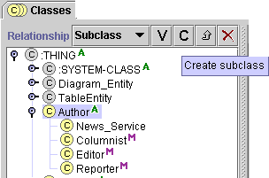
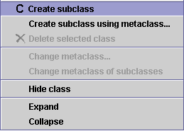
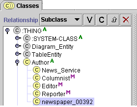
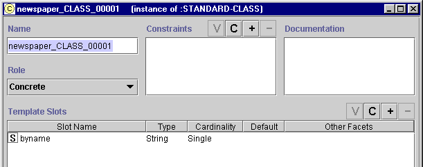

Creating a New Class
Creating a New Class

To create a new class:
- In the Class Relationship Pane,
highlight the class that you want as the superclass of the new class.

- Click the C(reate) button, which appears
as a
 in the class buttons at the right of the
Class Relationship Pane, or click the right mouse button and select
Create subclass from the cascading class menu.
in the class buttons at the right of the
Class Relationship Pane, or click the right mouse button and select
Create subclass from the cascading class menu.

- The new class will be added under the highlighted
class. It will have a default name, such as project_CLASS_00001.

- Use the Class Form to name the class, choose its role, create constraints, and create and edit
slots. See Viewing a Class for more information.

Next: Deleting a Class
Classes Table of Contents